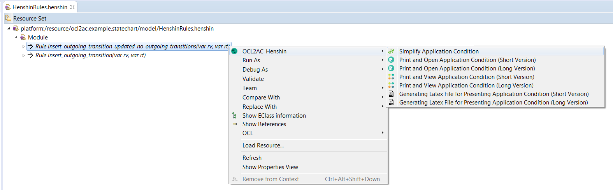

Optimizing-by-Construction Techniques
To install the optimizer being integrated into OCL2AC, please use the guidance described in the main webpage of our tool OCL2AC (https://ocl2ac.github.io/home/#installation) but be sure to use the following release URL instead of the one mentioned in the gaudiness (item 4).
The URL of the new release is: https://ocl2ac.github.io/home/opt/optrelease
We have implemented the following functionalities and integrated into the tool OCL2AC:
(1) Optimizer: It constructs an optimized validity-preserving application condition from a given a constraint and a rule. Our optimizer checks if the constraint is required to be integrated into the rule and removes unnecessary checks from the resulting application condition during the construction process if the constraint is required.
The figures below show (a) the wizard for choosing a rule, a constraint and the functionalities for constructing optimized validity-preserving application conditions and (b) two message examples which could be resulted after applying our optimizer: One for showing that the constraint is not required to be integrated into the given rule and one for showing the list of constraints which are integrated into the given rule since they are needed. Using our optimizer, the user can automatically construct the optimized validity-preserving application condition from a list of constraints and a rule. The wizard has the functionalities of OCL2AC to construct validity-guaranteeing application conditions (the buttons titled with integrate) as well.

(2) Equivalence rules: A functionality which simplifies application conditions by applying equivalence rules (as described in Section 5). The figure below shows the corresponding functionally which should be invoked by the user (right click on a selected Henshin rule (opened by the tree-based editor) -> choose OCL2AC_Henshin -> Simplify Application Condition).

Evaluation and Proof
- Please, after installing our tool, download and import the following Eclipse-plugins which compose the artefacts used in our complexity and performance experiments:
- The correctness proof of our techniques can be found in the long version of the paper [PDF].